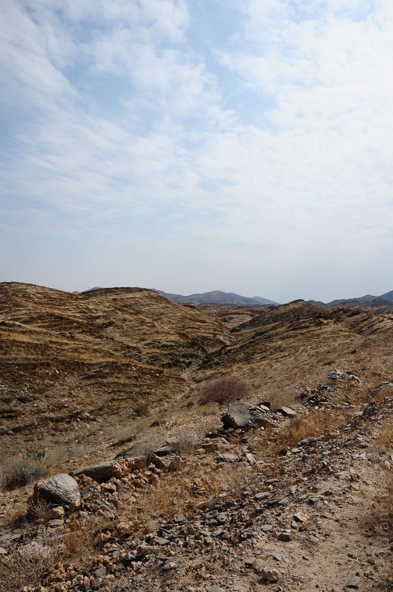
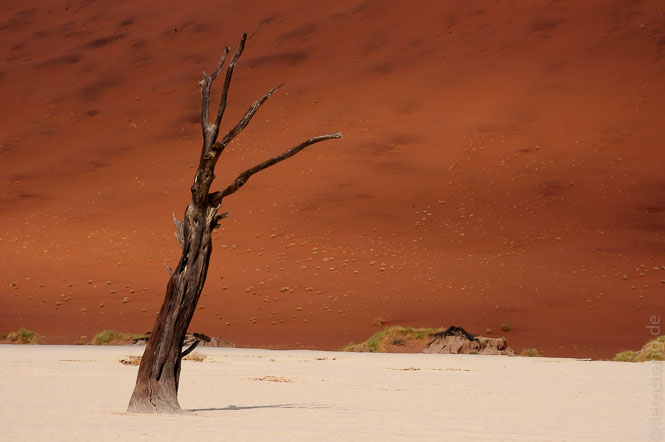
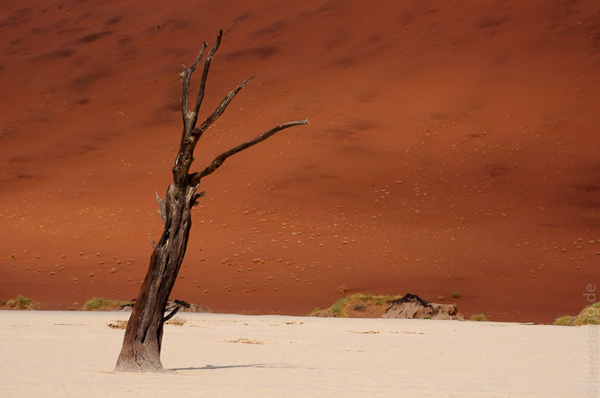

15. September 2010
Sossuvlei
Zum Schluss unserer Reise durfte natürlich ein Stopp an der berühmtesten Düne Namibias (oder gar des südlichen Afrikas?) nicht fehlen. Mit dem ersten Licht haben wir die Küste hinter uns gelassen und sind zurück ins Landesinnere gefahren. Der Nebel hat sich erstaunlich lange an unsere Fersen geheftet, während wir auf der immer schlechter werdenden Straße Walvis Bay hinter uns ließen.
Im Laufe weniger Stunden verwandelt sich die Landschaft von der kühlen Küste langsam aber sicher zum vertrauten, heißen Afrika. In der Naukluft-Region angekommen, wird es bergiger und auch die Bäume trauen sich wieder raus. Nach dem Verkehrsknotenpunkt Solitaire - falls man eine Tankstelle an einer Kreuzung in der Pampa so nennen kann - wird die Straße glücklicherweise wieder besser.
In Sesriem sind wir Dank eines unglaublichen Internetschnäppchens für einen Bruchteil der üblichen Rate in der luxuriösen Sossusvlei Lodge untergekommen. Das Hotel liegt direkt neben der Einfahrt zum Sossusvlei-Park. Bei der Pool-Inspektion sind wir zwar auf eine tote Ratte gestoßen, aber der Rest des Hotels ist sehr hübsch gemacht. Für den Safari-Spirit schläft man in einem architektonischen Hybriden aus Zelt und Bungalow. Unsere Terrasse endet im Sand der offenen Landschaft, in der wir vom Bett aus die Springböcke beobachten konnten. Ihre glücklosen Geschwister konnten wir uns beim abendlichen Buffet braten lassen - köstliche Tiere!
Am nächsten Morgen sind wir in den Park nach Sossusvlei gefahren. Auf der 60km langen (sehr guten) Strecke gerät man von der Steppe wieder in die Wüste, die hier in 200m hohen, orange-roten Dünen links und rechts aufragt. Das "Vlei" ist eine Salz-Pfanne, die flach in grellem Weiß zwischen den Dünen liegt. Aus dem zersprungenem Boden ragen tote Bäume wie schwarze Gerippe. Sossusvlei selbst ist lange nicht so attraktiv wie die Nachbarpfanne "Dead Vlei", wo sich kein bisschen Grün hintraut.
Gegen Mittag leert sich der große Parkplatz und es wird wieder still in der Wüste, wo den Morgen über Scharen von Touristen laut schreiend (Italienisch scheint besonders weit zu schallen) durch den Sand staksen. Wir haben die Gelegenheit genutzt uns auf eine höllische, kleine Wanderung zum "Hidden Vlei" zu machen - noch so ein Ort, noch toter, noch leerer. Der anstrengende Weg durch den Sand ist extrem lohnenswert.
Naukluft-Gebirge / Hauchabfontein
Namib abgehakt. Aber in die andere Richtung liegt das Naukluft-Gebirge, das wir bei einem sehr schönen Ausflug zur Hauchabfontein Farm besucht haben. Auf dem Gelände der Farm gibt es einen Köcherbaumwald. Dieser hübsche Baum mit geometrischen Gabelungen und sternförmigen Blattkronen ist typisch für die Gegend. Mit einem Pickup sind wir über einen kaum erkennbaren Weg in die Berge geholpert, bis wir endlich die Köcherbäume bestaunen konnten.
Danach mussten wir uns schon auf den unerfreulichen Rückweg machen. Nach hunderten Kilometern Schotterpiste bis Windhoek mussten wir uns weiteren Quälereien von Air Namibia stellen. In den dreckigen, engen Flugzeuge, wird man zwischen 1000-Taschen-Westen, Lederhüten und Abenteuerpantoletten in die touristische Geriatrie eingewiesen. Bis zum Start wurden wir (wirklich!) mit deutscher Volksmusik beschallt. Bei "Herzilein" beneidet man die zahlreichen Mitreisenden, die einfach ihre Hörgeräte abschalten können.



 
